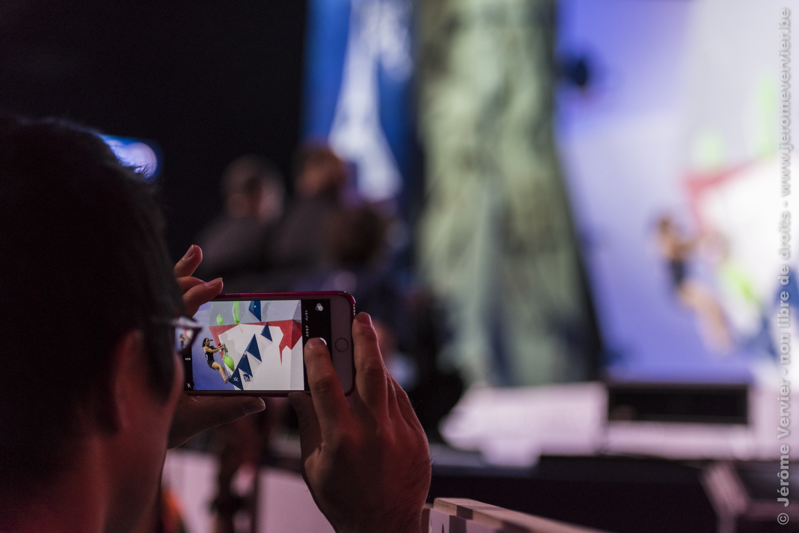
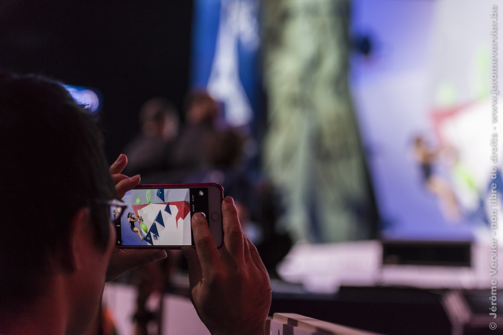
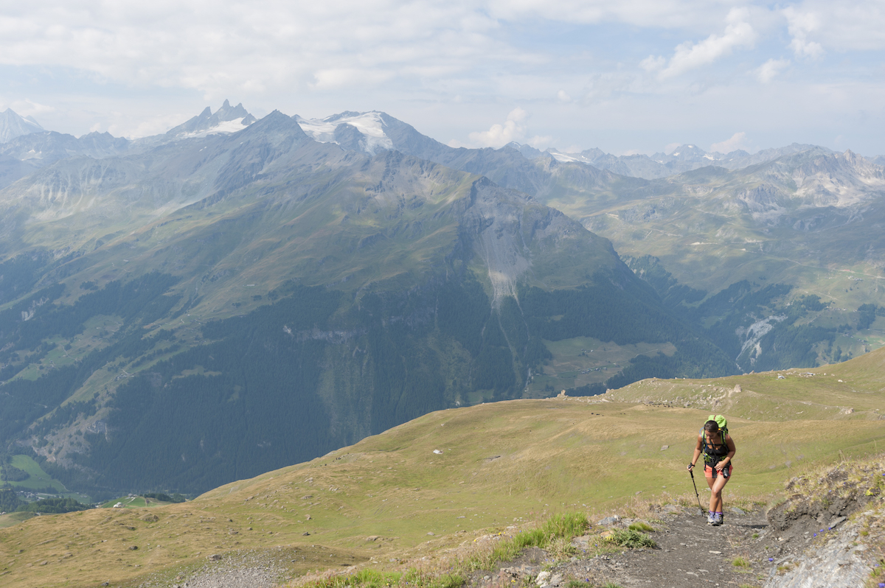
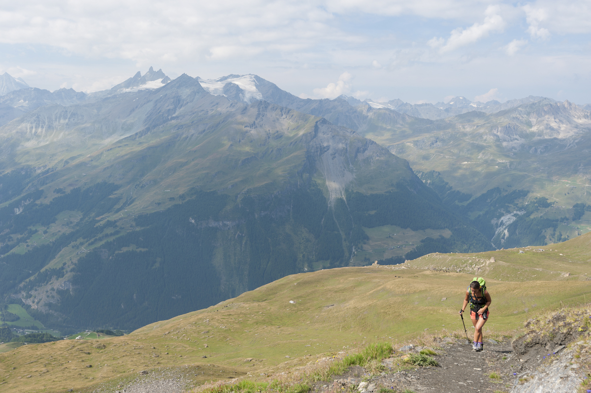

Une petite présentation s'impose... Jérôme Vervier, de formation Analyste/Développeur de logiciels, j'ai aussi acquis de l'expérience dans différents autres domaines comme la photographie, les cours d'escalade, le travail du bois,... Ceci illustre sans doute un de mes traits de caractère, l'attrait pour la découverte. Mais que serait une découverte si elle ne pouvait pas profiter aux autres? Second point particulier avec moi, j'apprécie gagner en expérience, en faire bénéficier les autres et partager ses expériences. J'apprécie vraiment de cerner le besoin d'un client. Je ne suis pas un rat de laboratoire isolé, j'aime travailler en équipe ou conjointement avec le client pour répondre au mieux à son besoin mais aussi l'informer.
Ma formation principale et une passion avant tout, passion motivée par l'aide que l'informatique peut apporter au travail, au quotidien,... Mes compétences sont diverses et variées :


Seconde activité à mon actif professionnellement, la photographie. J'ai débuté en sport moteur sur les championnats belges, du Monde, Superbike,... Tout en ayant de l'activité dans le milieu de l'escalade. Mais mon champ d'activité ne s'arrête pas là :
 

 


Un domaine que j'apprécie est la montagne. À ce monde est lié pas mal de pratiques : Escalade, Alpinisme, Trail,... Pour l'escalade j'ai été plus loin et obtenu mon brevet d'Animateur SNE (Site Naturel d'Escalade) me permettant d'assister des Moniteurs lors de journées ou stages en rocher.
Rien de plus simple ! Un petit email à l'adresse suivante suffit pour un premier contact